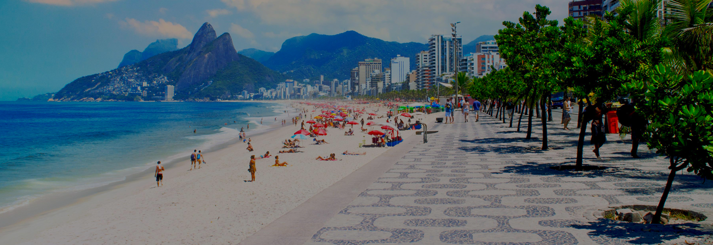
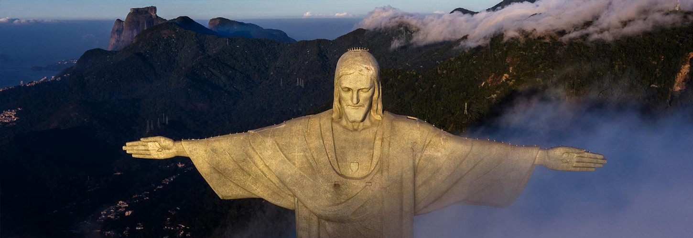

Ipanema Beach
The Ipanema Beach in Rio de Janeiro became popular worldwide
after the famous song “The Girl from Ipanema” released in 1962.

Cristo Redentor
Christ the Redeemer is an Art Deco statue of Jesus Christ in Rio de Janeiro, Brazil,
created by French sculptor Paul Landowski and built by Brazilian engineer
Heitor da Silva Costa in collaboration with French engineer Albert Caquot
Pão de Açucar
Sugarloaf Mountain is a peak situated in Rio de Janeiro, Brazil, at the mouth of Guanabara Bay
on a peninsula that juts out into the Atlantic Ocean,
the peak is named for its resemblance to the traditional shape of concentrated refined loaf sugar.